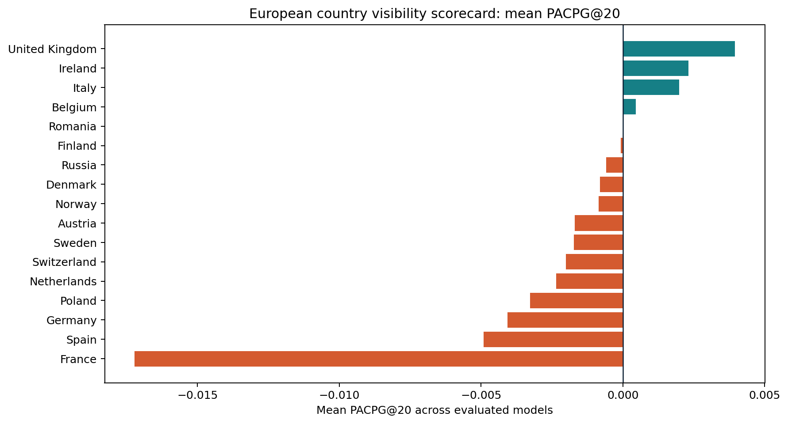
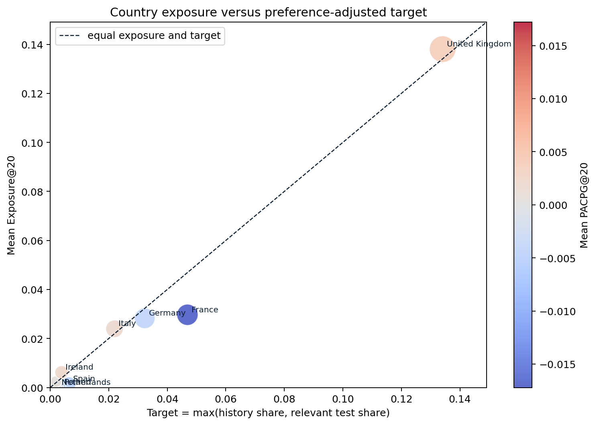
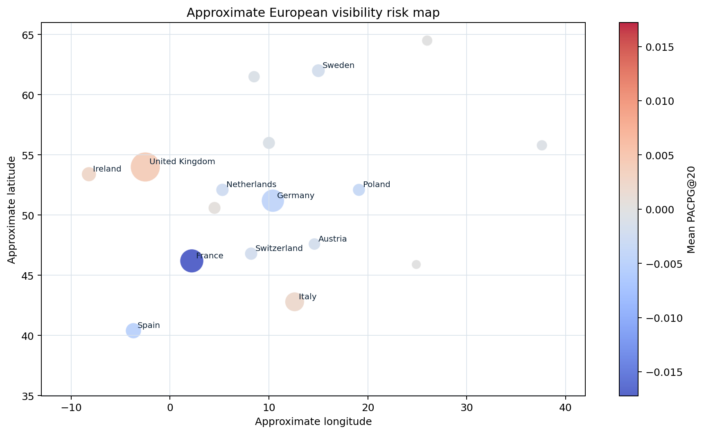
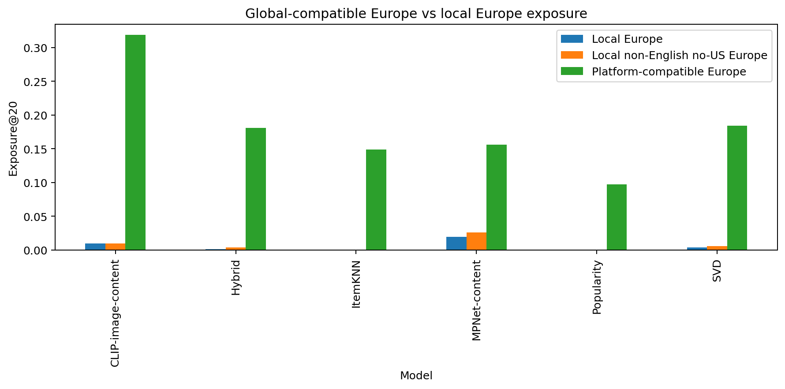
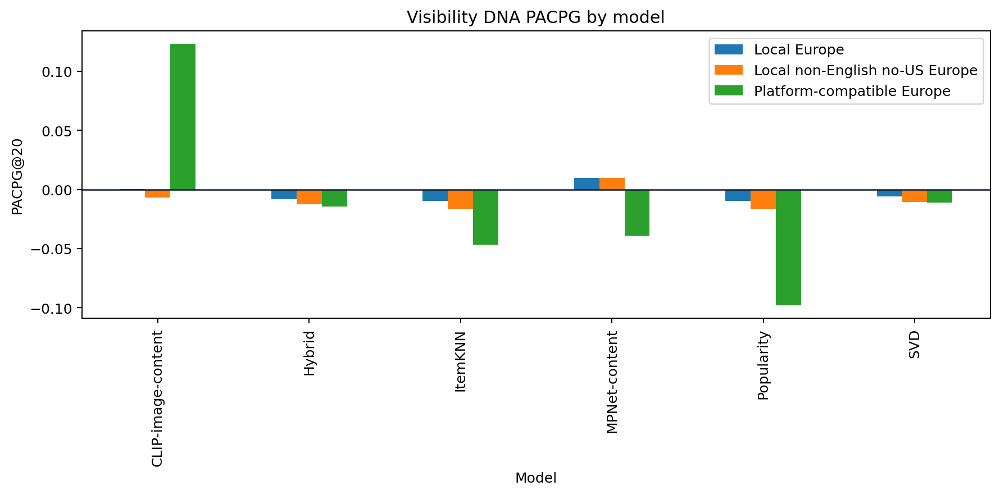

Availability
What is in the catalogue and which metadata can be trusted?
Project roadmap
This UI turns the final notebook into an easy-to-read research roadmap: what we asked, why each step exists, which technique we used, and what the evidence says.
Red thread
The project is not “we trained recommenders”. It is an audit pipeline for a governance problem: cultural works can exist in a catalogue but still lose ranked visibility.
What is in the catalogue and which metadata can be trusted?
Which models turn that catalogue into Top-K attention?
Which countries and languages fall below user-adjusted targets?
What can be reported, mitigated and not overclaimed?
Roadmap
Select a step to see the question, technique, reason, outcome and the evidence artifact we would show in the presentation.
Country risk
The country analysis compares mean Exposure@20 against a transparent target: the stronger signal from user history and relevant test items. A negative PACPG means rankings expose that country less than the preference-adjusted target.



Model evidence
We compare classical collaborative filtering, content-based MPNet/CLIP, hybrid scoring and transparent re-ranking. The goal is not only accuracy, but the trade-off between utility and visibility.
Outcome
These are the claims that are currently supported by the final notebook. Each answer is paired with its caveat, so the story stays strong without overclaiming.
Research extension
This final extension adds interpretation, not model noise. It uses transparent score components to test whether rankings surface local, non-English, low-US-involvement European films or mainly globally compatible Europe.


Technique choices
The methodology is intentionally transparent: defensible baselines first, then multimodal comparison, then governance-aware re-ranking.
Final takeaway
The roadmap gives a clean thesis-style answer: build reliable labels, train comparable recommenders, measure exposure against user-adjusted targets, inspect country and language concentration, stress-test feedback drift, and report mitigation as a utility trade-off.